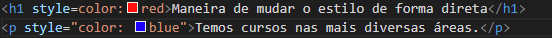
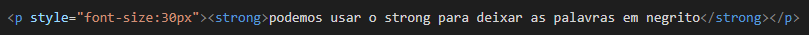
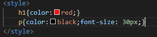
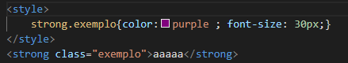
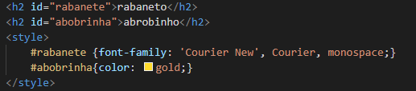
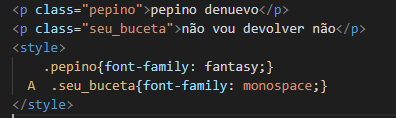

Maneira de mudar o estilo de forma direta
Exemplo

podemos usar o strong para deixar as palavras em negrito

podemos definir como cada elemento vai ser

É possivel notar que o elemento strong tambem ficou verde isso ocoree pois alguma propriedades são herdadas pelos elementos filhos , strong é filho de p nesse caso
podemos mudar o elemento strong assim como mudamos o p , usarei uma classe por motivos didaticos

aaaaa
IDS USADOS NO CSS
rabaneto
abrobinho

AGORA USANDO CLASSES
pepino denuevo
não vou devolver não

mesmo possuem classes definidas o p com estilo de cor verde ainda as influecia